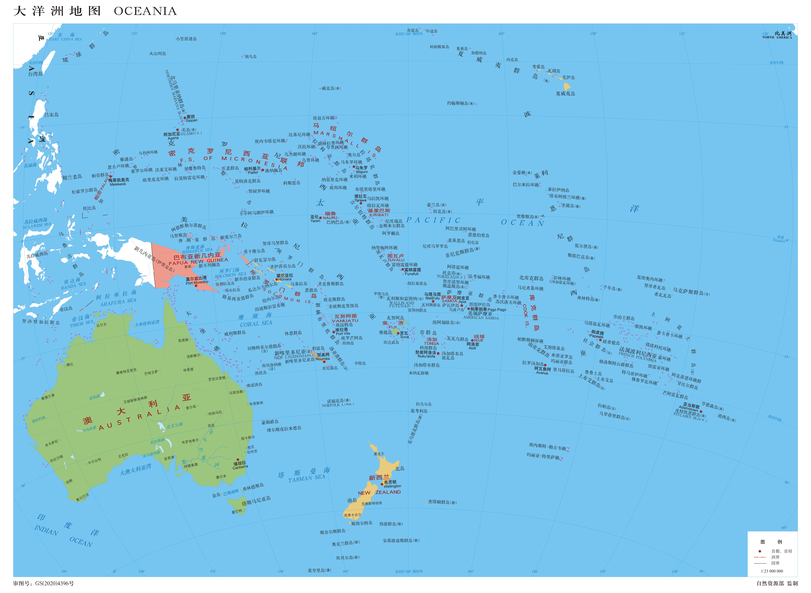
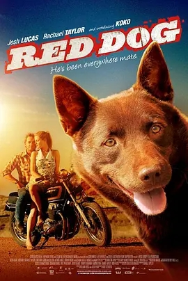
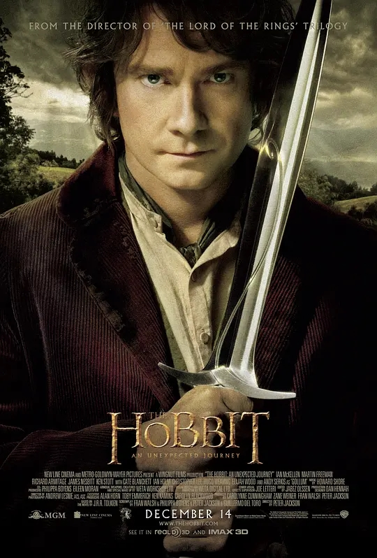

Back to top
影片改编自英国作家路易斯·德·伯尼尔斯《战地情人》的畅销书，讲述了名叫Koko的小狗穿越澳大利亚寻找曾经的主人的真实感人故事。 影片中的红犬，由一只两岁大的叫做Koko卡尔比犬扮演。这种犬据称是柯利犬的后代，目前在澳大利亚的分布极其广泛。 在澳大利亚西北部的一个铁矿上， 有一只叫Red的红犬。在美国青年约翰（乔什·卢卡斯 Josh Lucas 饰）一次救了它之后，就把约翰做了自己的主人。 约翰爱上了矿上的秘书（瑞切尔·泰勒 Rachael Taylor 饰）。但在订婚之后的第二天的早上，约翰在上班的路上撞死了一只袋鼠，导致摩托车翻车自己当场丧命。 从后，Red走遍了澳大利亚，甚至搭乘轮渡东至日本，去寻找自己的主人……

Back to top
中土最后一座矮人王国埃尔波尔，巍峨壮丽，庄严雄伟。老国王索尔积聚大量财富，却引来恶龙史茅革的觊觎和荼毒，最终导致这座城池陷落。 许多年后，灰袍巫师甘道夫（伊恩·麦凯伦 Ian McKellen 饰）找到弗罗多的舅舅——霍比特人比尔博·巴金斯（马丁·弗里曼 Martin John C. Freeman 饰）， 邀请他加入由13名矮人组成的远征队伍。原来史茅革已多年不见声息，背负家国仇恨的矮人王子索林（理查德·阿米蒂奇 Richard Armitage 饰）希望借此机会收复故土。 经过一番考虑，巴金斯决定加入。令他想不到的是，远征旅途多灾多难，与索林结下深仇大恨的苍白半兽人及其爪牙阴魂不散，更有食人鬼和石人制造的无数艰险。而在旅途中，巴金斯也意外得到了日后影响整个中土的重要宝物…… 本片根据J.R.R·托尔金的同名原著改编。
Back to top
巴布亚新几内亚是南太平洋最大的岛国，拥有火山、密林、瀑布与河流，800多个部落生活其间。这里的黑人却是南太平洋最早的居民，部落风俗与传统延续至今。在大海的包围中，巴布亚人与奇妙自然和谐相处。 越过原始热带雨林，首都莫比斯港， APEC会议中心已经建设完成，道路建设正在紧张施工进行中。作为2018年APEC峰会的举办地，巴布亚新几内亚正展露出另外一种姿态，努力摆脱原始和贫困，在梦想中拥抱未来。 本片借助真实纪录影像，从自然、民族、文化、历史等多个角度探寻神秘而充满魅力的南太岛国巴布亚新几内亚。